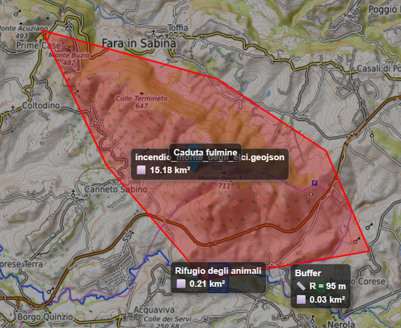
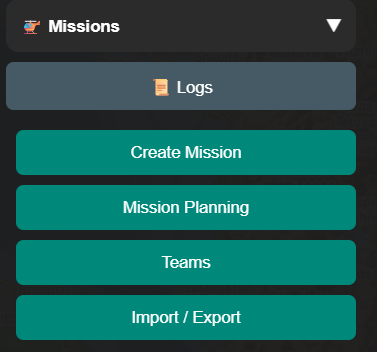
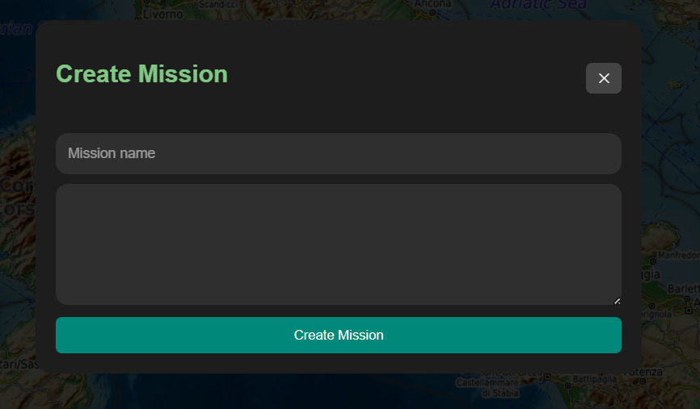
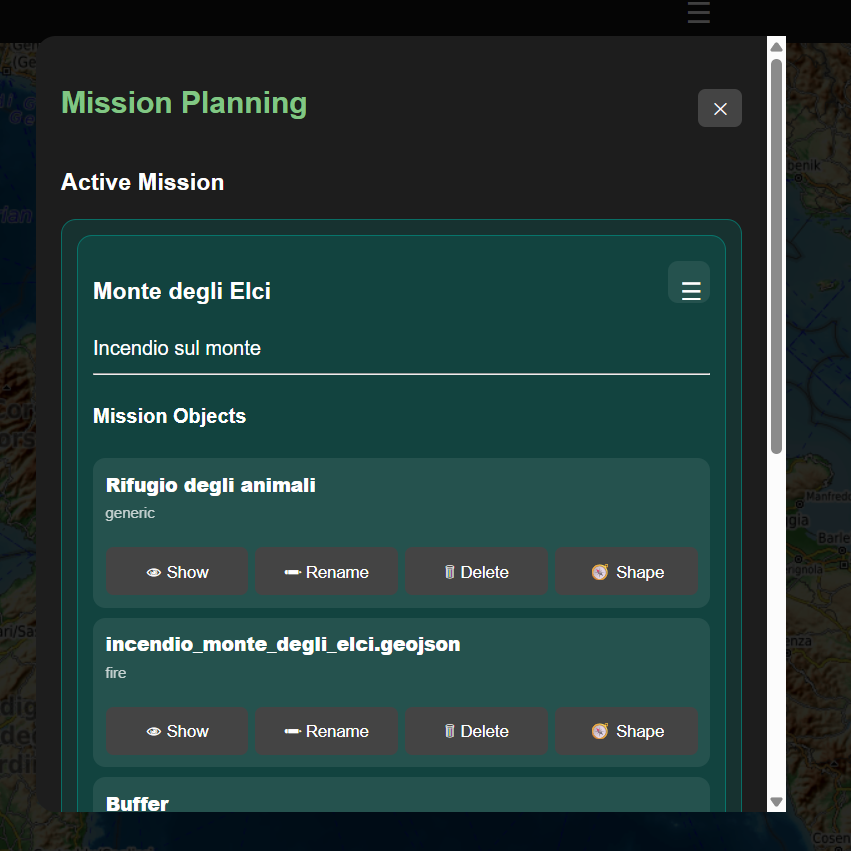
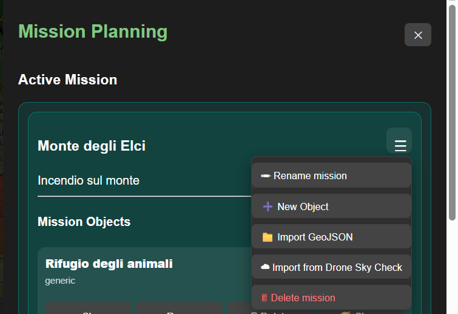
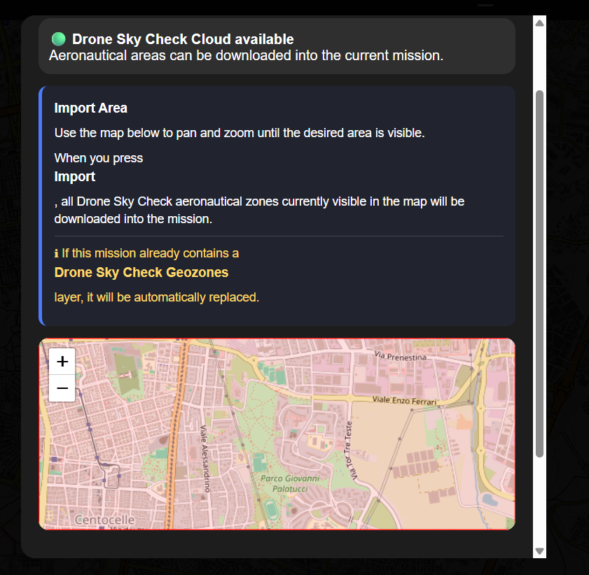
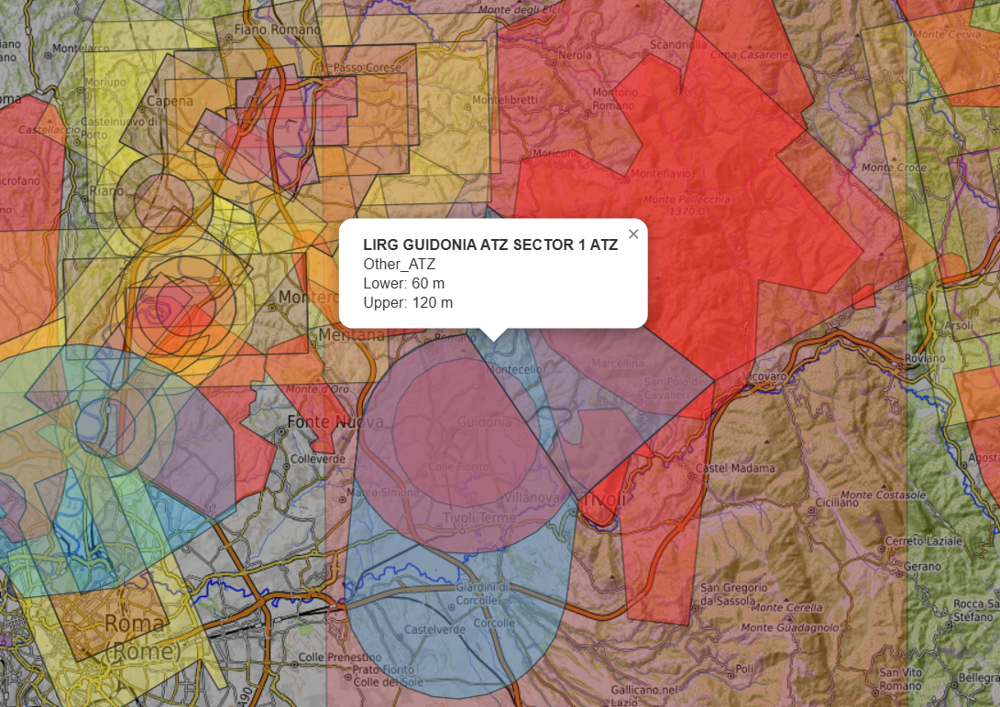
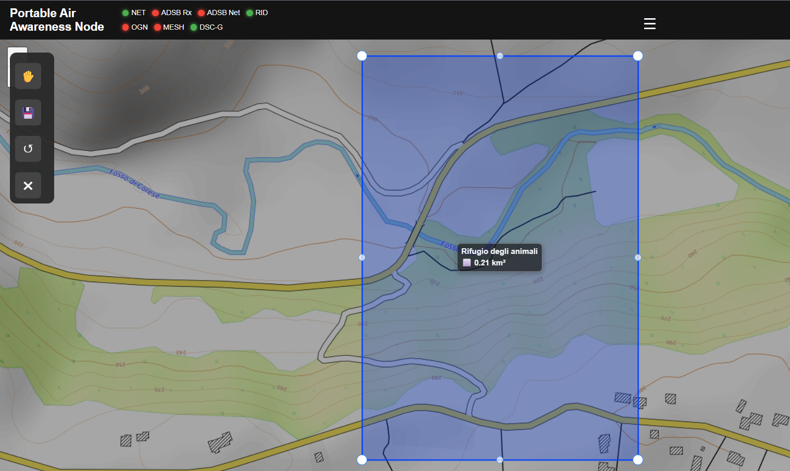

Mission Planning
Part of the Mini Tracker User Guide
Purpose
This document describes how operators use Mission Planning within Mini Tracker.
Mission Planning allows the operator to select the active mission, review mission objects, display mission objects on the map, import GeoJSON or Drone Sky Check layers and create or modify map objects for the current mission.
Mission objects are part of the operational map picture. They can represent areas, points, landing zones, buffers or other operational references used during field activity.

Mission objects displayed on the operational map.
Overview
Mission Planning is accessed from the Missions section of the Dashboard drawer.

Missions drawer section with Mission Planning access.
The Missions section provides access to:
- Create Mission
- Mission Planning
- Teams
- Import / Export
The current inspected Dashboard shows Import / Export as disabled. GeoJSON and Drone Sky Check layer import are available from the active mission menu inside Mission Planning.

Create Mission panel with mission name, description and create action.
Active Mission
The Mission Planning window shows the active mission at the top of the interface.

Active mission panel with mission objects and object actions.
If no mission is selected, the active mission area shows that no active mission is available. When a mission is selected, the active mission card shows the mission name, description and mission object list.
The active mission menu provides the available mission actions:
| Action | Operational Use |
|---|---|
| Rename mission | Change the mission name and description. |
| New Object | Start drawing a new mission object on the map. |
| Import GeoJSON | Import a GeoJSON or JSON file as a mission layer. |
| Import from Drone Sky Check | Download Drone Sky Check aeronautical zones for the selected map area. |
| Delete mission | Delete the active mission after confirmation. |
Deleting the active mission also clears the active mission selection.
Mission Selection
The Available Missions section lists missions known to Mini Tracker.
Each mission entry shows:
- Mission name
- Mission description when available
- Mission status
Selecting a mission from the list makes it the active mission. The Mission Planning window then refreshes the active mission card and mission object list for the selected mission.
Mission Object Visibility
Mission objects are displayed as independent map overlays above the base map.
The Show mission objects on map control changes visibility for all objects in the active mission. Individual objects can also be shown or hidden from the mission object list.
When only some objects are visible, the all-objects control reflects a partial selection state.
Changing mission object visibility affects only the map display. It does not delete or modify mission object data.
Mission Objects
Mission objects are listed under the active mission card.
Each object entry shows the object name, object type and available object actions:
| Action | Operational Use |
|---|---|
| Show / Hide | Display or remove the object from the map. |
| Rename | Change the object name. |
| Delete | Delete the object after confirmation. |
| Shape | Edit the object geometry on the map. |
Showing an object adds it to the map and centers the map around the object extent when possible.
Mission object popups show the object name, type and description when available.
Drone Sky Check layers are shown in the same mission object list, but their geometry is read-only. The Shape action is disabled for these layers.
Importing GeoJSON Layers
GeoJSON file import is available from the active mission menu by selecting Import GeoJSON.
The import workflow accepts .geojson and .json files. The uploaded file is stored as a mission layer for the active mission and then appears in the mission object list.
Imported layers are treated like other mission objects for map visibility, deletion and object list management.
Importing Drone Sky Check Zones
Drone Sky Check import is available from the active mission menu by selecting Import from Drone Sky Check.

Active mission menu with the Drone Sky Check import action.
The import window shows the Drone Sky Check availability state and a preview map. The preview map follows the main operational map when the import window opens. The operator can pan and zoom the preview map to choose the area to import.

Drone Sky Check import panel with preview map and import controls.
When the operator selects Import, Mini Tracker downloads Drone Sky Check aeronautical zones visible in the preview map and stores them as a mission layer named Drone Sky Check zones.
The import window includes:
| Control | Operational Use |
|---|---|
| Import Area | Shows the map area used for the Drone Sky Check request. |
| Simplified geometry | Requests simplified geometry for the imported zones when enabled. |
| Import | Starts the download and mission layer update. |
| Cancel | Closes the import window without importing. |
During import, the window shows progress messages while Mini Tracker connects to Drone Sky Check, downloads aeronautical areas and updates the mission.
If the active mission already contains a Drone Sky Check zones layer, the existing layer is replaced by the new import. This prevents repeated imports from creating duplicate Drone Sky Check zone layers in the same mission.
Drone Sky Check import requires Internet connectivity and configured Drone Sky Check zone access. If the service is unavailable, the import action is disabled in the import window. If the backend cannot complete the request, Mini Tracker shows an import error instead of updating the mission layer.
Drone Sky Check Layers
Imported Drone Sky Check zones are mission layers, but they behave differently from operator-created layers.
| Behavior | Operator-Created Layer | Drone Sky Check Layer |
|---|---|---|
| Visibility | Can be shown or hidden. | Can be shown or hidden. |
| Rename | Can be renamed from the mission object list. | Can be renamed from the mission object list. |
| Delete | Can be deleted from the mission object list. | Can be deleted from the mission object list. |
| Shape editing | Available through Shape. | Disabled. |
| Geometry | Created or edited by the operator. | Downloaded from Drone Sky Check. |
| Labels and measurements | Controlled from layer properties. | Disabled by default for imported zones. |
Drone Sky Check zones use their own map styling. Selecting a zone on the map opens a popup with the zone name, type, lower limit and upper limit when those fields are present in the downloaded data.

Imported Drone Sky Check zones displayed as a mission layer on the map.
Drawing New Objects
Selecting New Object closes the Mission Planning window and opens the mission drawing toolbar on the map.
The drawing toolbar supports:
| Tool | Use |
|---|---|
| Rectangle | Draw a rectangular mission area. |
| Polygon | Draw a custom polygon area. |
| Circle | Draw a circular area with radius information. |
| Marker | Place a point object. |
| Save | Continue to the layer properties window. |
| Close | Cancel the drawing operation. |
After drawing the geometry, selecting Save opens the layer properties window.
Editing Object Shape
The Shape action opens the selected object on the map and switches the drawing toolbar into edit mode.

Mission object geometry editor on the operational map.
In edit mode, the toolbar allows the operator to enable vertex editing and save the updated geometry. Saving opens the layer properties window so the operator can confirm the object information before the object is updated.
Closing the drawing toolbar cancels the active drawing or editing session.
Geometry editing is not available for Drone Sky Check layers.
Layer Properties
The layer properties window is used when creating a new object or saving an edited object.
It contains:
| Field | Purpose |
|---|---|
| Name | Object display name. |
| Category | Object category shown in the mission object list. |
| Color | Object line and fill color on the map. |
| Description | Optional operational description shown in object details. |
| Show label | Controls whether the object label is shown on the map. |
| Show measurements | Controls whether available area or radius information is shown with the label. |
Available categories are:
- Generic
- Search Area
- Fire Area
- Landing Zone
- Buffer
- Point of Interest
Labels may include the object name and, when enabled, measurements for supported geometries such as circles and polygons.
For Drone Sky Check layers, labels and measurements are disabled.
Typical Operational Workflow
A typical mission planning workflow is:
flowchart TD
A["Open Dashboard"]
B["Open Mission Planning"]
C["Select Active Mission"]
D["Review Mission Objects"]
E["Show Required Objects"]
F["Import Or Draw Objects"]
G["Use Objects On Operational Map"]
A --> B
B --> C
C --> D
D --> E
E --> F
F --> GRecommended sequence:
- Open the Dashboard from a device connected to Mini Tracker.
- Open Mission Planning from the Missions drawer section.
- Select the mission that should be active for the operation.
- Review the current mission objects.
- Show only the mission objects required on the operational map.
- Import GeoJSON layers, import Drone Sky Check zones or draw new objects when additional references are required.
- Confirm object labels, measurements and colors before using them during the operation.
Operational Recommendations
- Keep the active mission aligned with the current field operation.
- Use clear mission and object names so they can be recognized quickly in the object list and on the map.
- Display only the mission objects needed for the current phase of the operation.
- Use object categories consistently across missions.
- Verify imported GeoJSON and Drone Sky Check layers on the map before relying on them operationally.
- Use labels and measurements when they improve map interpretation, and disable them when the map becomes crowded.
- Delete obsolete objects when they are no longer useful for the mission.
Operational Notes
- Mission objects are stored as local mission layers.
- GeoJSON import adds a layer to the active mission; it does not import a complete mission package.
- Drone Sky Check import downloads aeronautical zones for the selected map area into the active mission.
- Re-importing Drone Sky Check zones replaces the existing Drone Sky Check zones layer for that mission.
- Drone Sky Check layers are read-only for geometry editing.
- The Dashboard shows a mission creation dialog with name and description fields, while current planning operations are performed on missions available in the mission list.
- The Import / Export button in the Missions drawer is currently disabled.
- Mission object visibility is a display control and should not be used as confirmation that an object has been deleted.
- Mission objects remain separate from the base map source. Changing between online and offline maps does not change mission object data.